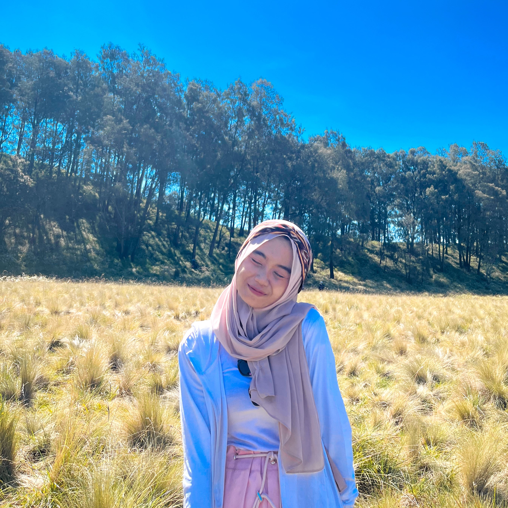

Aster Glory adalah usaha aksesoris handmade yang saya dirikan dan kelola secara mandiri dengan fokus pada pembuatan berbagai aksesoris berbahan manik-manik. Berawal dari hobi dan ketertarikan saya pada dunia kreativitas, saya mengembangkan Aster Glory menjadi usaha yang memproduksi aksesoris dengan desain yang unik, menarik, dan mengikuti tren. Produk yang saya buat dipasarkan melalui toko online di Shopee, media sosial Instagram, serta penjualan secara langsung. Dalam menjalankan usaha ini, saya terlibat dalam seluruh proses bisnis, mulai dari pembuatan produk, pengelolaan stok, pengemasan pesanan, promosi, hingga pelayanan pelanggan. Selain mengasah kreativitas dan ketelitian dalam membuat produk, pengalaman ini juga membantu saya mengembangkan kemampuan komunikasi, pemasaran, problem solving, serta memahami cara membangun dan mengelola usaha secara mandiri. Melalui Aster Glory, saya belajar bahwa kualitas produk dan kepuasan pelanggan merupakan faktor penting dalam mempertahankan dan mengembangkan sebuah bisnis.
Tsania Rahma
Ardhiyati
digital marketer · entrepreneur · content creator
Halo, saya Tsania — mahasiswa S1 Bisnis Digital FEB Universitas Negeri Surabaya. Saya memiliki passion di bidang digital marketing, e-commerce, dan content creation, serta berpengalaman membangun brand sendiri sejak masa SMA. Selalu antusias untuk belajar, berkolaborasi, dan berkontribusi di industri bisnis digital & kreatif.

hi, I'm Tsa! ♡
get to know me
About Me
Tsania, 21. hobi lainnya suka naik gunung!
Digital Business · UNESA
Tsania, mahasiswa S1 Bisnis Digital FEB Universitas Negeri Surabaya angkatan 2024 yang passionate di digital marketing, e-commerce, content creation, dan entrepreneurship, Perjalanan bisnis dimulai sejak SMA — dari jualan kecil-kecilan sampai punya brand sendiri. Mulai dari online shop aksesori handmade Aster Glory, usaha bunga handmade WarmFloralHaven, bisnis F&B pre-order, hingga affiliate marketing TikTok dengan AI prompting untuk konten fashion. Semua pengalaman itu jadi bekal berharga dalam memahami product design, branding, customer service, dan strategi pemasaran digital. Selain bisnis, juga aktif di organisasi kampus — DIGCOFEST, PIMBA, dan UKM Kewirausahaan — yang makin mengasah kemampuan teamwork, koordinasi, problem solving, dan leadership.
Orangnya komunikatif, teliti, kreatif, dan selalu semangat belajar hal baru. Saat ini sedang excited mengeksplorasi lebih dalam dunia bisnis digital dan industri kreatif! ✿
Education
things I've built
Working Experience
Saya aktif membuat konten promosi produk fashion dan pakaian melalui program TikTok Affiliate. Dalam kegiatan ini, saya bertanggung jawab mencari produk yang sesuai dengan target pasar, menyusun konsep konten, membuat materi promosi, melakukan editing, serta mengikuti tren yang sedang berkembang di media sosial. Saya juga mempelajari strategi pemasaran digital dan perilaku konsumen untuk menghasilkan konten yang menarik dan relevan bagi audiens. Dalam proses pembuatan konten, saya memanfaatkan teknologi Artificial Intelligence (AI) untuk menghasilkan visual promosi produk fashion dengan model virtual, tanpa menggunakan atau menampilkan identitas maupun wajah individu tertentu. Saya menyusun prompt dan mengarahkan AI agar menghasilkan visual yang sesuai dengan kebutuhan promosi dan konsep konten. Melalui pengalaman ini, saya mengembangkan kemampuan content creation, digital marketing, AI prompting, serta pemanfaatan teknologi digital secara kreatif dan bertanggung jawab.
WarmFloralHaven adalah usaha handmade yang saya bangun dari ketertarikan saya pada dunia kerajinan dan dekorasi. Usaha ini berfokus pada pembuatan bunga dekoratif berbahan bulu kawat (pipe cleaner) yang dirangkai menjadi berbagai bentuk bunga dengan tampilan yang estetik dan unik. Setiap produk dibuat secara manual dengan penuh ketelitian, mulai dari proses pembentukan kelopak bunga, perakitan rangkaian, hingga pengemasan dalam wadah yang menarik agar siap diberikan sebagai hadiah maupun dekorasi. Dalam menjalankan usaha ini, saya terlibat langsung dalam seluruh proses, mulai dari mencari inspirasi desain, membuat produk, mengatur stok bahan, mempromosikan produk, hingga melayani pelanggan. Melalui WarmFloralHaven, saya tidak hanya mengembangkan kreativitas dan ketelitian, tetapi juga belajar mengelola usaha secara mandiri, membangun komunikasi dengan pelanggan, serta menciptakan produk yang memiliki nilai estetika dan nilai jual.
Usaha wonton ini saya jalankan sebagai bentuk pengembangan minat saya di bidang kuliner dan kewirausahaan. Produk yang saya jual terdiri dari berbagai varian wonton, seperti wonton kuah dan wonton kering, yang dipasarkan melalui sistem pre-order (PO) serta platform GrabFood. Dalam menjalankan usaha ini, saya terlibat langsung dalam proses persiapan produk, pengelolaan pesanan, promosi, hingga pelayanan pelanggan. Melalui usaha ini, saya belajar bagaimana melayani pelanggan dengan baik, mengelola pesanan secara tepat, serta menjaga kualitas produk agar pelanggan merasa puas. Selain itu, saya juga memperoleh pengalaman dalam pemasaran, komunikasi dengan pelanggan, dan pengelolaan usaha secara mandiri. Pengalaman ini membantu saya mengembangkan kemampuan beradaptasi, bekerja dengan target, serta memahami pentingnya pelayanan yang baik dalam menjalankan sebuah bisnis kuliner.
where I've contributed
Organizational Experience
Secretary — DIGCOFEST International Competition
HMP Bisnis Digital, Universitas Negeri Surabaya
Aug — Nov 2025
DIGCOFEST merupakan kompetisi berskala internasional yang diselenggarakan oleh program studi. Sebagai sekretaris, saya bertanggung jawab dalam mengelola administrasi kegiatan, menyusun dan mengarsipkan dokumen, membuat notulensi rapat, serta membantu penyusunan surat-menyurat yang berkaitan dengan pelaksanaan acara. Saya juga berkoordinasi dengan ketua dan anggota panitia untuk memastikan informasi dan kebutuhan setiap divisi dapat tersampaikan dengan baik. Melalui pengalaman ini, saya mengembangkan kemampuan administrasi, komunikasi profesional, ketelitian, manajemen waktu, serta kerja sama tim dalam lingkungan organisasi.
Mentor — PIMBA Faculty Organization
BEM Fakultas Ekonomika dan Bisnis, Universitas Negeri Surabaya
July — Nov 2025
Sebagai mentor dalam kegiatan PIMBA, saya bertugas mendampingi dan membimbing mahasiswa dalam memahami Program Kreativitas Mahasiswa (PKM). Saya membantu peserta dalam menemukan ide, memberikan arahan terkait penyusunan proposal, serta mendukung proses diskusi dan pengembangan gagasan. Selain itu, saya juga berperan sebagai penghubung antara peserta dan penyelenggara kegiatan untuk memastikan informasi dapat tersampaikan dengan baik. Pengalaman ini meningkatkan kemampuan komunikasi, kepemimpinan, public speaking, serta kemampuan membimbing dan bekerja sama dengan berbagai individu.
Campus Expo Committee
Ikatan Alumni SMAN 20 Surabaya
January 2025
Sebagai panitia Campus Expo SMA Negeri 20 Surabaya, saya terlibat dalam persiapan dan pelaksanaan kegiatan yang bertujuan memperkenalkan lingkungan perkuliahan khususnya Universitas Negeri Surabaya kepada calon mahasiswa. Tugas saya meliputi membantu koordinasi acara, mendampingi peserta, memberikan informasi yang dibutuhkan, serta memastikan kegiatan berjalan sesuai dengan susunan acara yang telah direncanakan. Pengalaman ini membantu saya mengembangkan kemampuan komunikasi, pelayanan peserta, koordinasi kegiatan, serta kemampuan bekerja dalam tim yang dinamis.
Member — UKM Kewirausahaan
Universitas Negeri Surabaya
2025 — 2026
Sebagai anggota UKM, saya aktif mengikuti berbagai kegiatan yang bertujuan mengembangkan kemampuan organisasi, kerja sama tim, dan pengembangan diri. Saya terlibat dalam diskusi, kegiatan kepanitiaan, serta berbagai program yang diselenggarakan oleh UKM. Melalui pengalaman ini, saya belajar beradaptasi dengan berbagai karakter individu, membangun relasi, serta meningkatkan kemampuan komunikasi dan kolaborasi dalam lingkungan organisasi.
Karang Taruna – Committee & Community Volunteer
Karang Taruna RT 03 / RW 08, Kelurahan Wonorejo
2022 — 2025
Aktif berpartisipasi dalam kegiatan Karang Taruna di tingkat RT dan Kelurahan dengan membantu pelaksanaan berbagai kegiatan kemasyarakatan, seperti jalan sehat, peringatan Hari Kemerdekaan, serta berbagai perlombaan dan acara warga lainnya. Bertanggung jawab dalam membantu koordinasi kegiatan, pencatatan administrasi, menjaga ketertiban peserta, serta memastikan rangkaian acara berjalan dengan lancar. Melalui pengalaman ini, saya mengembangkan kemampuan komunikasi, kerja sama tim, koordinasi acara, problem solving, serta rasa tanggung jawab dalam mendukung kegiatan sosial dan kemasyarakatan.
Member — Chinese Language Club (CLC)
PGSD Universitas Negeri Surabaya
March 2025 — Present
Aktif sebagai anggota Chinese Language Club (CLC) di PGSD UNESA Lidah Wetan sejak Maret 2025. Melalui klub ini, saya mendalami bahasa dan budaya Tiongkok secara intensif. Pengalaman ini tidak hanya mengasah kemampuan komunikasi bahasa Mandarin saya, tetapi juga melatih kedisiplinan dan memperluas wawasan lintas budaya yang sangat bermanfaat dalam lingkungan akademik maupun profesional.
my journey achievements
Honors & Awards
my toolbox